Choose slings, use hand signals and work safely on ladders and scaffolds.
Read and listen
The voice reads the key points slowly. Pause any time.
- Sling WLLThe working load limit is for a single vertical hitch.
- HooksRemove a hook from service if the throat opening grew 15%.
- ChainGrade 8 is the minimum for overhead lifting.
- TaglinesUse a tagline when the load is out of reach from the ground.
- Tilting loadLower and re-rig if it tilts more than 5 degrees.
- PaddingPad all loads with sharp corners.
- Stop signalArm extended, palm down, move the hand side to side.
- Dog everythingClasp the hands in front of the body.
Games
Pictures come straight from the course documents. Questions come from the course answer keys and safe work procedures. Each one names its source.
Loading…
Loading…
Loading…
Loading…
Loading…
Loading…
Pictures from the course
679 pictures. Open a document to see them. Tap a picture to make it bigger.
BCIT Material Handling Module (113)


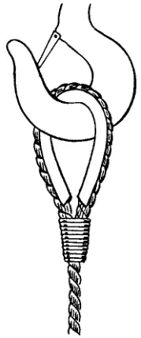

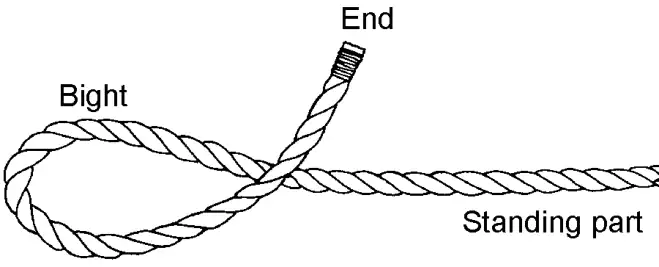

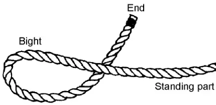

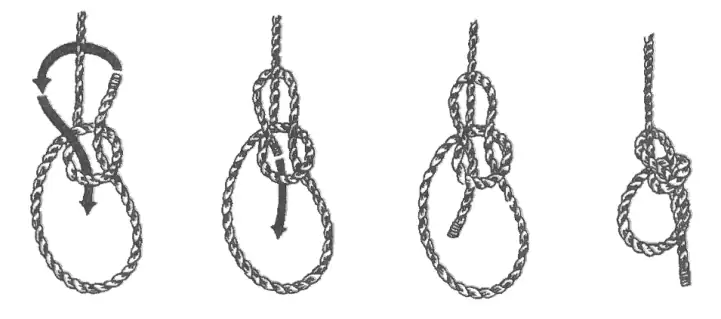

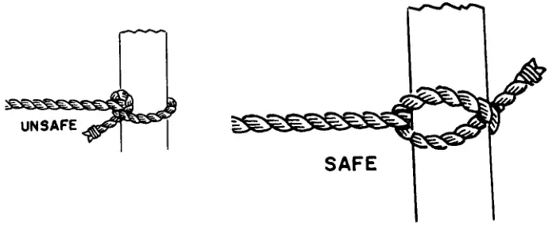

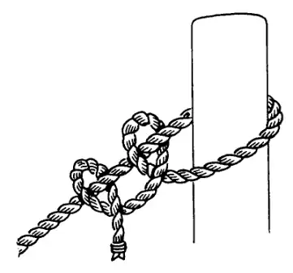

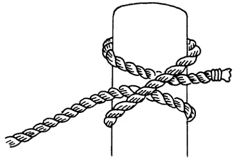

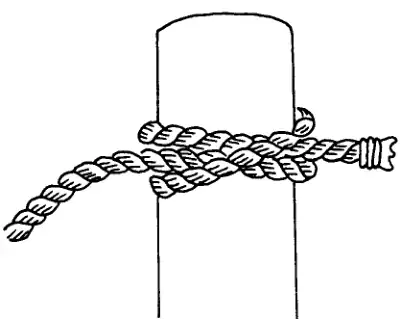


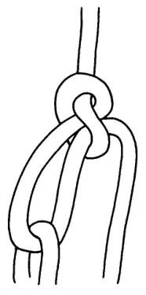

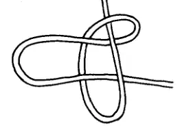

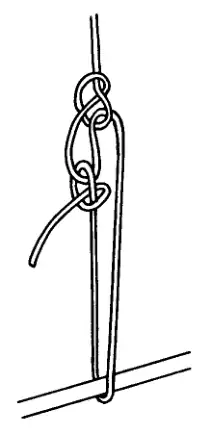

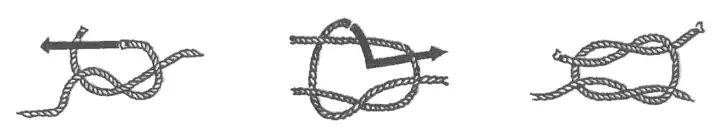

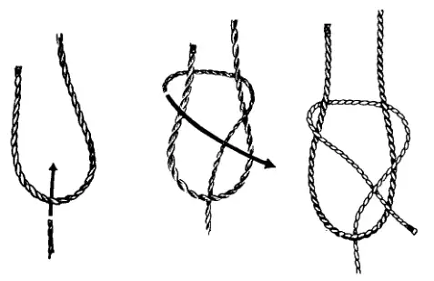

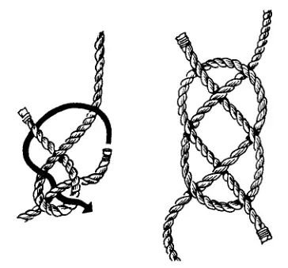

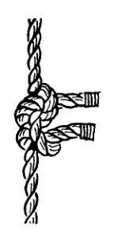

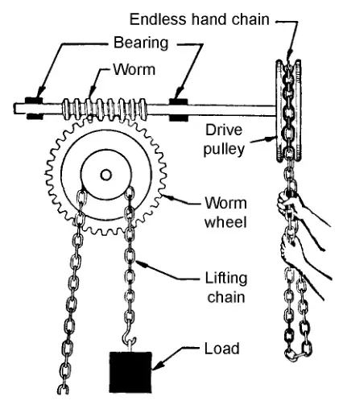

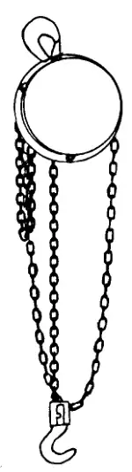

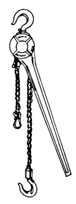

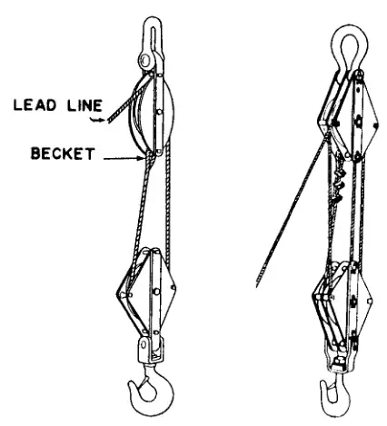

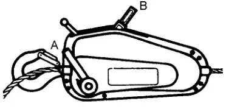

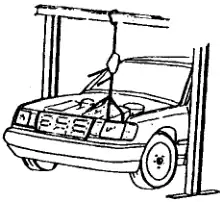

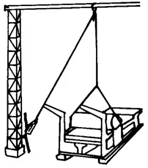

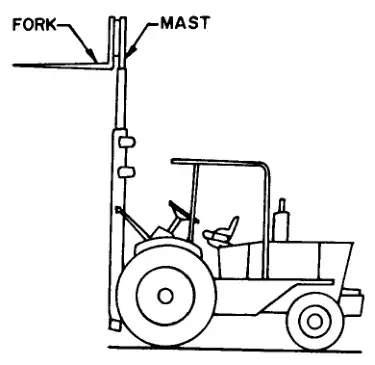

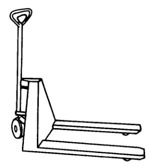


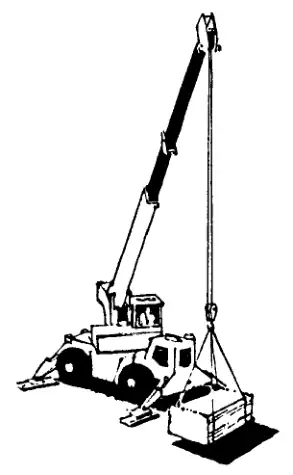

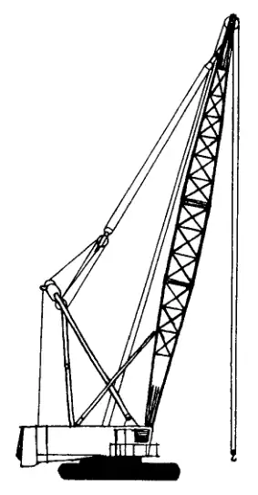

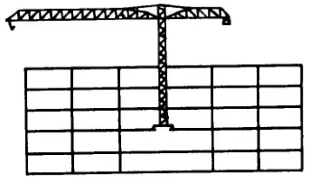


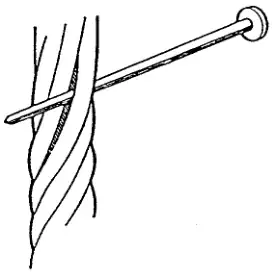

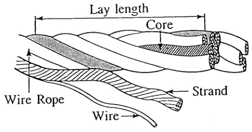

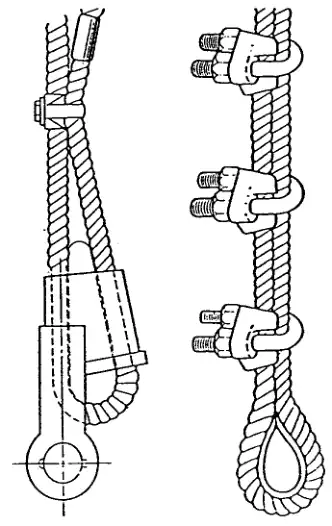

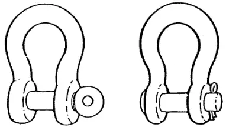

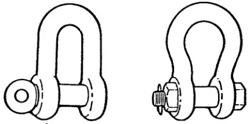

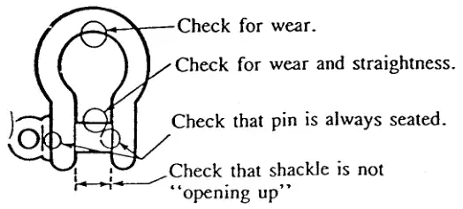

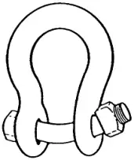

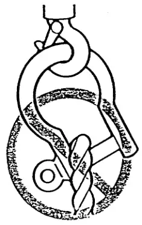

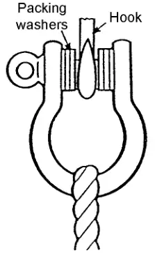


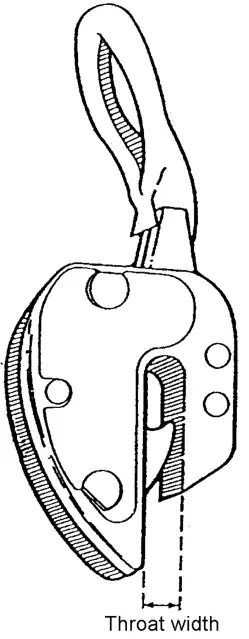

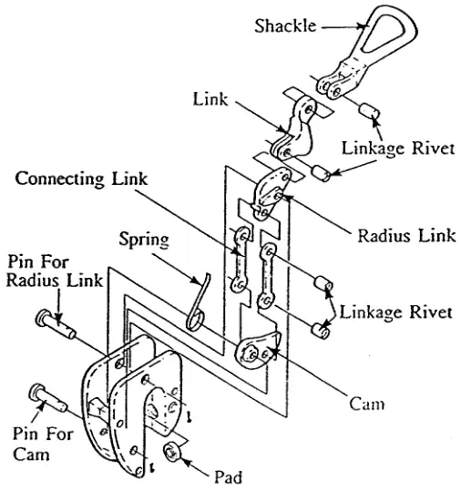

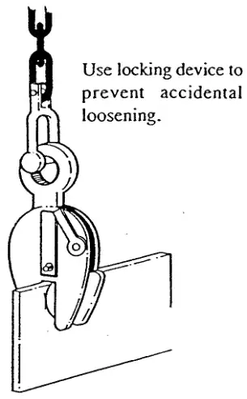

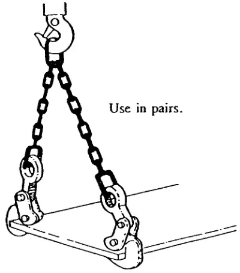

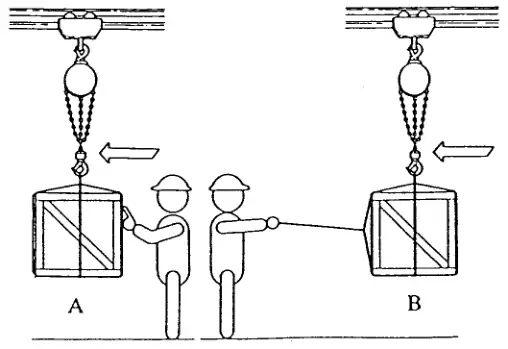

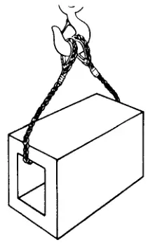

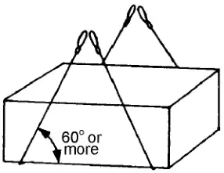

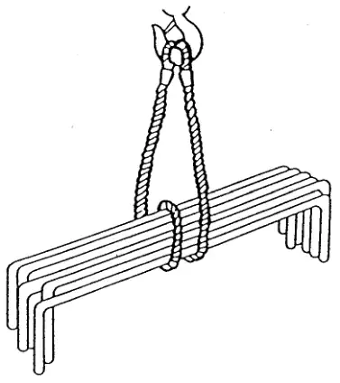

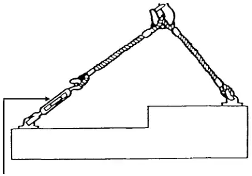

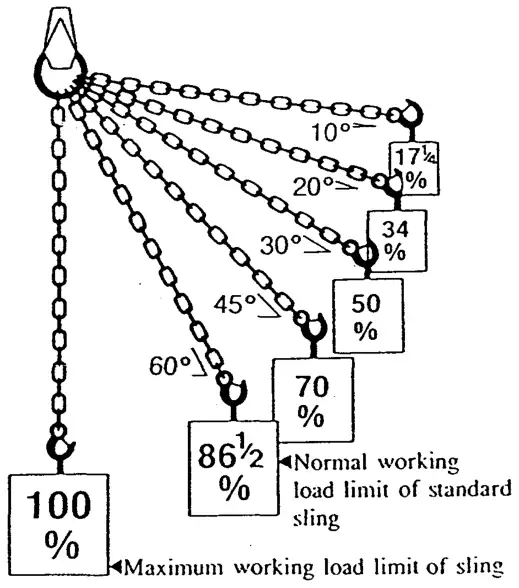

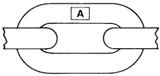

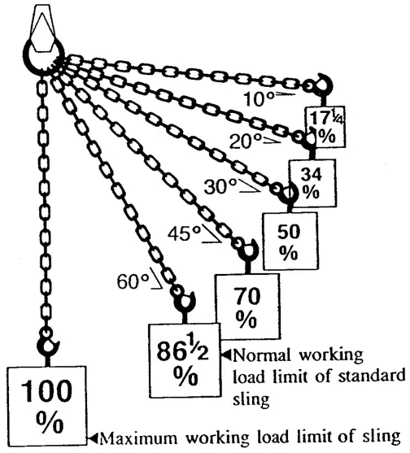

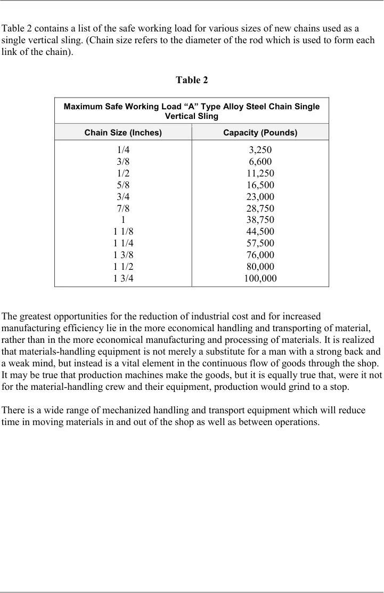

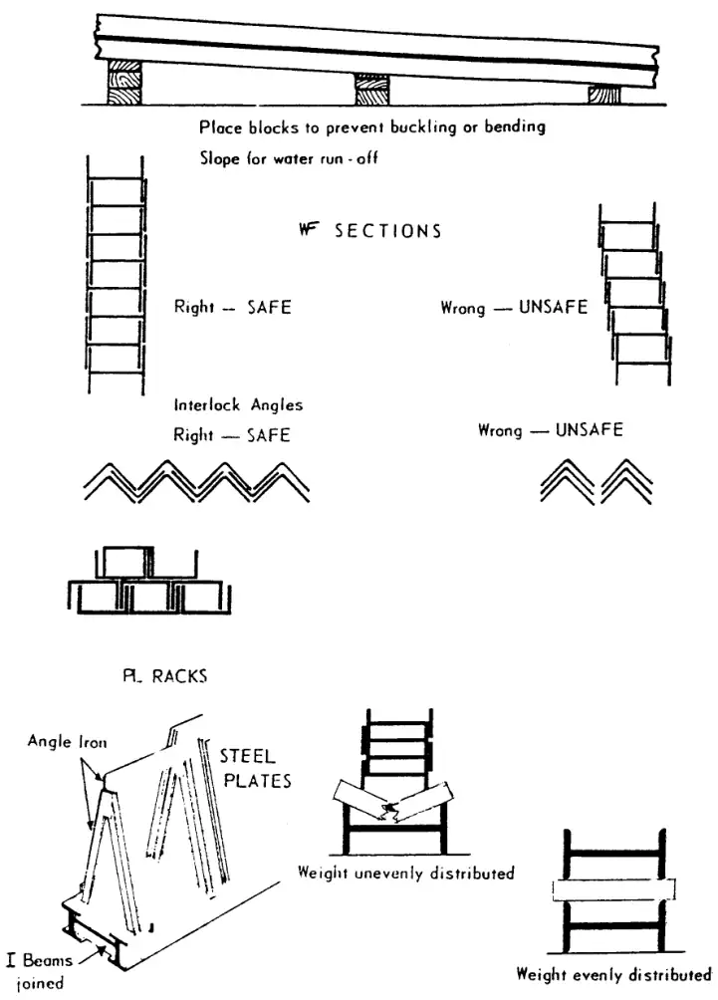


Ladders & Scaffolds MF (28)


Ladders and Platforms (34)


Material Handling Dos and Donts (88)


RK1 1 LT 2 (35)


Rigging Long (56)


Rigging and hoisting Equipment (146)


STEL FAB LEVEL 1 LEARN GUIDE (JULY 2009) 10033401 (64)


Documents in this module
- 1250_Rigging_Access_Equipment/RK1 Separate Modules/RK1_1 LT_1.pdf 17 pages, 7 pictures
- 1250_Rigging_Access_Equipment/RK1 Separate Modules/RK1_1 LT_2.pdf 17 pages, 35 pictures
- 1250_Rigging_Access_Equipment/RK1 Separate Modules/RK1_1 LT_3.pdf 15 pages, 19 pictures
- 1250_Rigging_Access_Equipment/RK1 Separate Modules/RK1_1 LT_4.pdf 15 pages, 26 pictures
- 1250_Rigging_Access_Equipment/RK1 Separate Modules/RK1_2 LT_1.pdf 9 pages
- 1250_Rigging_Access_Equipment/RK1 Separate Modules/RK1_2 LT_2.pdf 5 pages, 2 pictures
- 1250_Rigging_Access_Equipment/RK1 Separate Modules/RK1_2 LT_3.pdf 5 pages, 1 pictures
- 1250_Rigging_Access_Equipment/RK1 Separate Modules/RK1_2 LT_4.pdf 3 pages
- 1250_Rigging_Access_Equipment/RK1 Separate Modules/RK1_2 LT_5.pdf 5 pages, 2 pictures
- 1250_Rigging_Access_Equipment/RK1 Separate Modules/RK1_3 LT_1.pdf 9 pages, 4 pictures
- 1250_Rigging_Access_Equipment/RK1 Separate Modules/RK1_3 LT_2.pdf 3 pages, 1 pictures
- 1250_Rigging_Access_Equipment/RK1 Separate Modules/RK1_3 LT_3.pdf 15 pages, 13 pictures
- 1250_Rigging_Access_Equipment/RK1 Separate Modules/RK1_3 LT_4.pdf 9 pages, 9 pictures
- 1250_Rigging_Access_Equipment/RK1 Separate Modules/RK1_4 LT_1.pdf 13 pages, 15 pictures
- 1250_Rigging_Access_Equipment/RK1 Separate Modules/RK1_4 LT_2.pdf 9 pages, 7 pictures
- 1250_Rigging_Access_Equipment/RK1 Separate Modules/RK1_4 LT_3.pdf 5 pages
- E_Handle Materials/Rigging and hoisting Equipment.pdf 136 pages, 146 pictures
- E_Handle Materials/Rigging_Long.pdf 27 pages, 56 pictures
- E_Handle Materials/Sling angles.pdf 1 pages, 1 pictures
- E_Handle Materials/Worksafe hand signals.pdf 2 pages
- E_Handle_Materials/BCIT Material Handling Module.pdf 80 pages, 113 pictures
- Ladders & Scaffolds MF.pdf 30 pages, 28 pictures
- Ladders and Platforms.pdf 56 pages, 34 pictures
- Material Handling Dos and Donts.pptx 21 pages, 88 pictures
- Student Resources/Welder_Training_Program_C/RK-1_Material Handling.pdf 224 pages, 8 pictures
← Arc welding and welding symbolsQuality control and metallurgy →